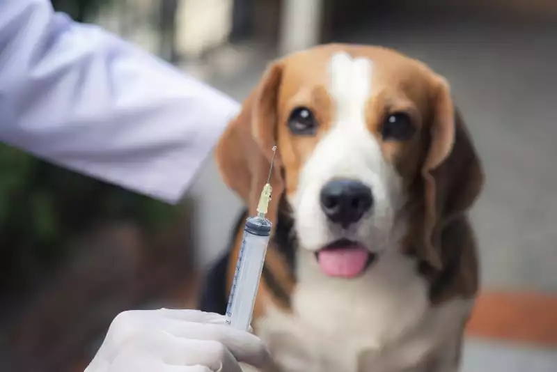
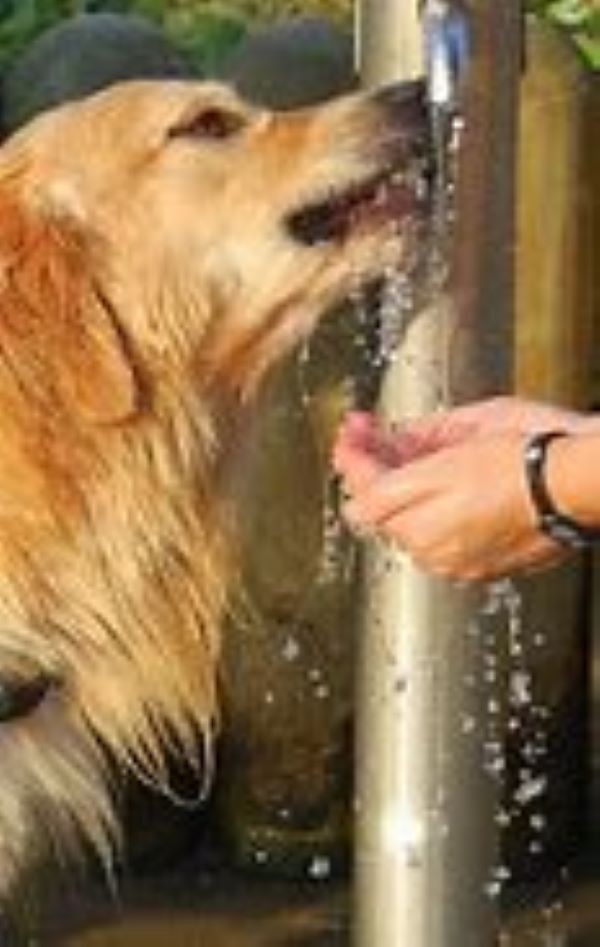
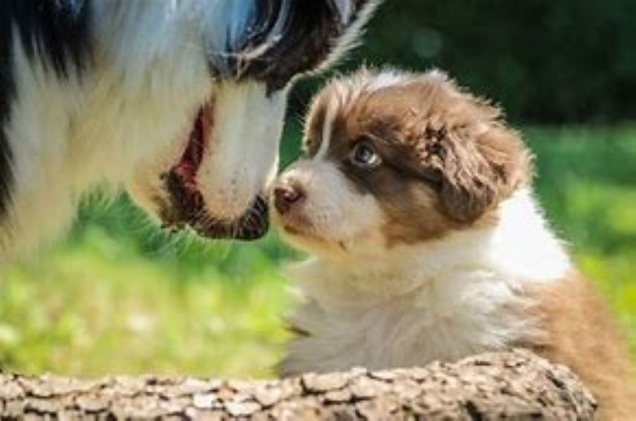
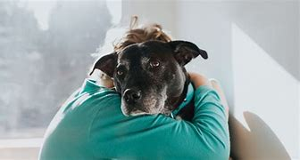

Cuidados
Cuidar de um cachorro pode ser uma experiência tão gratificante quanto desafiadora - especialmente para tutores de primeira viagem. Afinal, é de uma vida que estamos falando! Cães precisam de cuidados especiais, sobretudo nos primeiros anos de vida.
Além disso, o sucesso de um relacionamento de longo prazo entre tutor e cachorro depende da construção de uma boa base. Um cachorro tratado de maneira inadequada pode desenvolver estresse, depressão e até tendência à agressividade. Por isso, é fundamental oferecer boas condições para o seu amigo crescer forte e feliz, priorizando a saúde do animal.
Confira algumas dicas que todo tutor precisa saber para cuidar bem de um cachorro e desenvolver um relacionamento saudável e duradouro com o novo melhor amigo.
1.Mantenha a Vacinação em Dia
Vacinar o seu cachorro é uma das coisas mais importantes a fazer nas primeiras semanas! A vacinação adequada pode proteger os cães de uma ampla variedade de patógenos potencialmente perigosos, incluindo parvovírus, tosse do canil, hepatite e leptospirose.
Os filhotes geralmente recebem sua primeira série de vacinas por volta das oito a 10 semanas de idade, com outra série depois de duas a três semanas depois, mas os protocolos variam. Cachorros filhotes não devem entrar em contato com outros cães não vacinados até que estejam totalmente protegidos; portanto, passeios no parque são proibidos.
2. Não exagere nos exercícios
Enquanto muitos novos proprietários romantizam a ideia de fazer longas caminhadas com um cachorrinho brincalhão, a realidade é que os cães filhotes, especialmente de raças maiores, não devem fazer muito exercício. Filhotes têm muita energia, mas seus ossos, articulações e placas de crescimento são moles e podem ser prejudicados pelo excesso de exercício físico.
A regra geral para prática de exercício físico é cinco minutos por mês de idade, duas vezes por dia. Assim, um filhote de cachorro de 16 semanas precisaria de um total diário de apenas 40 minutos de exercício.
3. Forneça um ambiente saudável e limpo para o cachorro
Cuidar de um cachorro também exige um espaço limpo para ele fazer as necessidades sem entrar em contato com patógenos nocivos à saúde (à dele e à sua também!). O ideal é deixá-lo confortável no lugar certo, um local tranquilo, “exclusivo” e sempre higienizado. Se você não tem varanda ou quintal em casa é importante saber que existem opções de tapete higiênico sustentáveis, como os tapetes de pano lavável.
4. Mantenha água fresca sempre disponível
A hidratação é importante para manter a qualidade de vida e a energia do cachorro. Incentive seu amigo a beber água sempre para evitar complicações de saúde futuras.
5. Incentive a socialização
Os cães têm vários estágios importantes de desenvolvimento, sendo um deles o período de socialização, que se pensa estar entre as três e as 16 semanas de idade. Dentro dessa janela de oportunidade, os filhotes precisam ser expostos ao maior número possível de pessoas, outros animais e situações diferentes.
Deixar de socializar seu animal de estimação pode resultar em um forte medo desses estímulos mais tarde na vida e, em alguns casos, no desenvolvimento de problemas de comportamento resistentes.
Os cães cujo contato com crianças é negado podem se tornar excessivamente reativos em sua presença, investindo contra eles e até mesmo tentando morder. Por isso, atividades como levar o cachorro à casa de outras pessoas ou ao parque, para passear, são muito importantes nos primeiros anos de vida.
6. Cuidado com o apego excessivo
O apego excessivo pode resultar no aumento da ansiedade de separação quando os tutores têm de sair de casa. Os sintomas típicos desse transtorno de ansiedade incluem urinar ou defecar dentro de casa, latidos e choramingos, destruição da casa, tentativas de fuga ou automutilação sempre que o animal é deixado sozinho. A ansiedade de separação é difícil de tratar; por isso, é necessário fazer um esforço para prevenir o apego excessivo desde os primeiros meses de vida, aumentando gradualmente o tempo que o animal passa sozinho.
Para deixar a separação menos dolorosa, algumas ferramentas podem ajudar o filhote a se sentir relaxado durante esses períodos de separação, como brinquedos, difusores de feromônios, música clássica ou odores familiares (por exemplo, você pode deixar uma peça de roupa que não usa mais para o cachorro sentir o seu cheiro durante o período de separação).
7. Evite certos alimentos
Embora possa ser tentador dar ao seu cachorro as sobras da mesa, existe uma longa lista de alimentos que podem ser tóxicos para os cães. Chocolate, alho, cebola, cebolinha, uvas, cafeína, álcool e outros são proibidos, porque podem ser tóxicos para cães.
Além disso, o xilitol, um adoçante artificial encontrado em alimentos como goma de mascar sem açúcar, algumas manteigas de amendoim e alguns doces, pode causar quedas dramáticas no açúcar no sangue e, em alguns casos, insuficiência hepática.
8. Cuidado com plantas venenosas
Cachorros, especialmente filhotes, têm o costume de comer qualquer coisa que veem pela frente. No entanto, existem vários perigos botânicos de que os proprietários precisam estar cientes.
Sementes e folhagens como hera e visco podem ter um impacto fatal em cães. Os primeiros sinais de intoxicação podem incluir vômitos, diarreia e salivação, com efeitos mais graves, como danos ao fígado e rins, que demoram até dois dias para se manifestar. Novamente, cuidados veterinários devem ser procurados imediatamente se o dono suspeitar que seu filhote tenha comido qualquer material vegetal potencialmente venenoso.
9. Forneça alimentação de qualidade
Mantenha uma dieta de qualidade e evite problemas de saúde e obesidade no seu cachorro. Siga as recomendações dietéticas que o seu médico veterinário fará de acordo com as necessidades nutricionais do seu cão, com base no tamanho, idade, nível de atividade e raça. Lembre-se de oferecer guloseimas saudáveis, em vez de restos de comida, como recompensa. Oferecer alimentação natural, orientada por profissional da área veterinária, pode ser uma boa alternativa, se você tiver disposição e tempo para preparar as refeições.
10. Cuide dos dentes do cachorro
Muitas raças são propensas a desenvolver doenças na gengiva, o que pode ter sérias implicações. A infecção resultante dessa condição leva à perda prematura dos dentes e pode causar infecções nos principais órgãos, incluindo as válvulas cardíacas. Por isso, cuidar de um cachorro também envolve escovar os dentes do seu amigo regularmente.